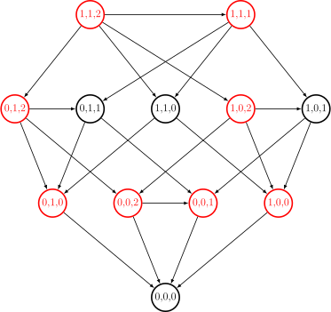

公平组合游戏
前置知识：博弈论简介
本文讨论 公平组合游戏．
公平组合游戏中，最基础也最重要的是正常 Nim 游戏．Sprague–Grundy 定理指出，所有正常规则的公平组合游戏都等价于一个单堆 Nim 游戏．由此，可以发展出 Sprague–Grundy 函数和 Nim 数的概念，它们完全地刻画了一个正常规则的公平组合游戏．因此，本文首先建立了正常 Nim 游戏的结论和 Sprague–Grundy 理论．随后，本文讨论了算法竞赛中常见的一些公平组合游戏．
最后，本文简单地讨论了反常 Nim 游戏．反常游戏相对于正常游戏来说要复杂得多，也很少在算法竞赛中出现．本文提到的游戏，如果没有特别说明，均默认为正常的公平组合游戏．
「状态」、「局面」与「游戏」
本文会交替地使用这三个词语．在博弈论中，游戏的状态（state）通常包括到游戏的某一时刻为止，所有可能与游戏有关的信息．在一般的情形下，游戏的状态通常包括双方玩家过往的行动、已经实现的随机变量值、双方已知信息的内容等．游戏的局面（position）相对来说并非博弈论的标准术语，通常指在游戏的某一时刻，双方玩家面对的局势，例如棋类游戏中各棋子的位置等．仅对于公平组合游戏（或更一般的零和、确定、完美信息游戏）而言，由于游戏不涉及随机性，且玩家未来的行动集合与收益函数均与到达当前局面的历史路径（即之前双方的行为）无关，所以，游戏的状态（state）和局面（position）没有区别，且都可以看作博弈图上的一个结点（node）．由于一个游戏（game）总是可以由它的初始局面描述，所以有时也会直接使用「局面」一词代指游戏本身．
Nim 游戏
Nim 游戏的规则很简单：
Nim 游戏
共有 \(n\) 堆石子，第 \(i\) 堆有 \(a_i\) 枚石子．两名玩家轮流取走任意一堆中的任意多枚石子，但不能不取．取走最后一枚石子的玩家获胜．
容易验证，Nim 游戏是正常规则的公平组合游戏．
例子
举个例子．当前，有 \(3\) 堆石子，石子的数量分别为 \(2,5,4\)．那么，可以取走第 \(1\) 堆中的 \(2\) 个物品，局面就变成了 \(0, 5, 4\)；也可以取走第 \(2\) 堆的 \(4\) 个物品，局面就变成了 \(2, 1, 4\)．如果某一时刻的局面变为了 \(0, 0, 5\)，甲取走了第 \(3\) 堆的 \(5\) 个物品，也就是取走了最后一个物品，此时甲获胜．
博弈图和状态
Nim 游戏中，局面可能的变化可以用博弈图来描述．
将每一个可能的状态都看作是图中的一个结点，并将状态向它的后继状态（即通过一次操作可以达到的状态）连边，就得到一个有向无环图，这就是博弈图．图是无环的，因为 Nim 游戏中，每次操作，石子的总数量都是严格减少的．
例子
例如，对于初始局面有 \(3\) 堆石子，且每堆石子的数量分别为 \(1,1,2\) 的 Nim 游戏，可以绘制如下的博弈图：

马上就会提到，图中的红色结点表示必胜状态，黑色结点表示必败状态．
由于 Nim 游戏是公平组合游戏，每个玩家是否有必胜策略，只取决当前游戏所处的状态，而与玩家的身份无关．因此，所有状态可以分为（先手）必胜状态 和（先手）必败状态，分别记为 \(\mathcal N\) 态和 \(\mathcal P\) 态1．这个定义适用于所有公平组合游戏．
通过下述引理，可以归纳地将所有状态标记为必胜状态和必败状态：
引理
正常规则的公平组合游戏中，
- 没有后继状态的状态是必败状态 \(\mathcal P\)，
- 一个状态是必胜状态 \(\mathcal N\) 当且仅当存在至少一个它的后继状态为必败状态 \(\mathcal P\)，
- 一个状态是必败状态 \(\mathcal P\) 当且仅当它的所有后继状态均为必胜状态 \(\mathcal N\)．
证明
对于第一条，如果玩家当前已经没有可选的行动，那么玩家已经输掉了游戏．
对于第二条，如果该状态至少有一个后继状态为必败状态，那么玩家可以操作到该必败状态；此时，对手面临了先手必败状态，玩家自己就获得了胜利．
对于第三条，如果不存在一个后继状态为必败状态，那么无论如何，玩家只能操作到必胜状态；此时，对手面临了先手必胜状态，玩家自己就输掉了游戏．
所有公平组合游戏中，博弈图都是有向无环图．所以，通过这三条性质，可以在绘制出博弈图后，在 \(O(|V|+|E|)\) 的时间内，计算出每个状态是必胜状态还是必败状态．其中，\(|V|\) 为博弈图的状态数目，\(|E|\) 为边数，即所有状态可以采取的行动的数量的总和．
这一引理可以推广到反常游戏和有向图可能有环的情形．相关讨论详见 有向图游戏 一节．
Nim 和
继续考察 Nim 游戏．
通过绘制博弈图，可以在 \(\Omega(\prod_{i=1}^na_i)\) 的时间内求出某一局面是否是先手必胜．但是，这样做的复杂度过高，无法实际应用．实际上，可以发现 Nim 游戏的状态是否先手必胜，只与当前局面的石子数目的 Nim 和有关．
Nim 和
自然数 \(a_1,a_2,\cdots,a_n\) 的 Nim 和（Nim sum）定义为 \(a_1\oplus a_2\oplus\cdots\oplus a_n\)．
所谓 Nim 和，就是 异或运算．
定理
Nim 游戏中，状态 \((a_1,a_2,\cdots,a_n)\) 是必败状态 \(\mathcal P\)，当且仅当 Nim 和
证明
对所有可能的状态应用归纳法：
- 如果 \(a_i=0\) 对所有 \(i=1,\cdots,n\) 都成立，该状态没有后继状态，且 Nim 和等于 \(0\)，命题成立．
-
如果 \(k = a_1\oplus a_2\oplus\cdots\oplus a_n\neq 0\)，那么，需要证明该状态是必胜状态．也就是说，需要构造一个合法移动，使得后继状态为必败状态；由归纳假设，只需要证明后继状态满足 \(a'_1\oplus a'_2\oplus\cdots\oplus a'_n=0\)．利用 Nim 和（即异或）的性质，这等价于说，存在一堆石子，将 \(a_i\) 拿走若干颗石子，可以得到 \(a_i\oplus k\)，亦即 \(a_i>a_i\oplus k\)．
实际上，设 \(k\) 的二进制表示中，最高位的 \(1\) 是第 \(d\) 位．那么，一定存在某个 \(a_i\)，使得它的二进制第 \(d\) 位是 \(1\)．对于相应的石子堆，就一定有 \(a_i>a_i\oplus k\)，因为 \(a_i\oplus k\) 中第 \(d\) 位为 \(0\)，更高位和 \(a_i\) 一样．
-
如果 \(a_1\oplus a_2\oplus\cdots\oplus a_n= 0\)，那么，需要证明该状态是必败状态．由归纳假设可知，只要证明它的所有后继状态的 Nim 和都不是 \(0\)．这是必然的，任何合法移动将 \(a_i\) 变为 \(a'_i\neq a_i\)，就必然会使得 Nim 和变为 \(a'_i\oplus a_i\neq 0\)．
由此，可以在 \(O(n)\) 时间内判断 Nim 游戏的一个状态是否为先手必胜状态．
Sprague–Grundy 理论
Sprague–Grundy 理论指出，所有公平组合游戏都等价于单堆 Nim 游戏．这一结论主要应用的场景，就是游戏由多个相互独立的子游戏组成的情形．此时，游戏的状态判定可以通过计算子游戏的 SG 函数值的 Nim 和来完成．如果游戏本身没有这样的结构，那么，判定必胜状态和必败状态只需要应用前文博弈图一节的 引理．
游戏的记法
前文已经说明，所有公平组合游戏都可以通过绘制博弈图来描述．由于博弈图中，每个状态的性质只由它的后继状态决定，所以，可以将博弈图中的一个状态 \(S\) 用它的后继状态的集合来表示．
例子（续）
以上文的博弈图为例，可以得到如下状态表示：
其中，\(S_{0,1,0}=S_{0,0,1}\)，\(S_{0,0,2}=S_{0,1,1}\)．
一个游戏可以用它的初始状态表示．
尽管公平游戏的表示可能相当复杂，单堆 Nim 游戏相对来说简单很多．只有一堆石子，石子数量为 \(n\) 时，它可以表示为
其中，记号 \(*n\) 表示石子数量为 \(n\) 时的单堆 Nim 游戏（的初始状态）．
例子（续）
利用这一记号，上面的例子中的状态可以简单地表示为
在随后的讨论中，记号 \(T\in S\) 应当理解为状态 \(T\) 是状态 \(S\) 的后继状态．
游戏的和与等价
游戏的等价关系，依赖于游戏的和2的概念．
游戏的和
游戏 \(G\) 和 \(H\) 的 和（sum），或称 游戏组合（combined game），记作 \(G+H\)，是指游戏
游戏的和，可以理解为由两个同时进行且互不干扰的子游戏组成的游戏，玩家在每一步能且只能选择其中一个子游戏移动一步，且游戏在两个子游戏都无法移动时结束．游戏的和的概念，可以推广到任意多个游戏的情形，且满足结合律和交换律——也就是说，多个游戏组合的结果，和组合进行的次序以及游戏的顺序都无关．Nim 游戏就是多个单堆 Nim 游戏的和．
一个观察是，尽管单堆 Nim 游戏中，除了没有石子的情形，都是先手必胜状态，但是这些不同的单堆 Nim 游戏在和其他的单堆 Nim 游戏组合起来时，得到的游戏并不相同．比如，游戏 \(*n\) 只有在和另一个 \(*n\) 组合时，才能得到一个必败游戏；和所有其他的游戏 \(*n'\neq *n\) 组合，得到的游戏都是必胜游戏．
这个观察带来的启示是，可以通过考察与其他游戏的和来研究某个游戏的性质．这就引出了游戏的等价的概念．
游戏的等价关系
如果对于所有游戏 \(H\)，游戏 \(G_1+H\) 和 \(G_2+H\) 都同处于必败状态或必胜状态，那么，称游戏 \(G_1\) 和 \(G_2\) 等价（equivalent），记作 \(G_1\approx G_2\)．
容易验证，这样定义的 \(\approx\) 确实是全体公平游戏上的 等价关系．
Sprague–Grundy 函数
对 Nim 游戏的分析说明，不同的单堆 Nim 游戏互不等价．但是，所有的公平游戏都等价于某个单堆 Nim 游戏．由此，可以给每个公平游戏都分配一个数字，这就是 Sprague–Grundy 函数．
为了证明这些结论，首先需要建立关于游戏等价关系的两个引理．第一，将必败游戏和任何游戏组合到一起，都和原来的游戏等价．
引理 1
对于游戏 \(G\) 和任何必败游戏 \(A\in\mathcal P\)，都有 \(G\approx G + A\)．
证明
按照定义，只需要证明对于任何游戏 \(H\) 都有 \(G+H\approx G+A+H\) 成立．
如果游戏 \(G+H\) 有必胜策略，那么，游戏 \(G+A+H\) 也有必胜策略．如果对手在子游戏 \(A\) 中进行了移动，就进行移动，将它恢复至必败状态；否则，按照游戏 \(G+H\) 中的必胜策略移动．这样一定能保证最终的胜利．
如果游戏 \(G+H\) 是必败游戏，那么，游戏 \(G+A+H\) 也同样是必败游戏．因为无论这一回合进行的是子游戏 \(G+H\) 和子游戏 \(A\) 中的移动，对手都可以在下一回合将相应子游戏恢复至必败状态．最终，先手玩家一定无法获胜．
第二，两个游戏等价，当且仅当它们的和是必败游戏．这一引理提供了证明两个游戏等价的方法．
引理 2
游戏 \(G\) 和 \(G'\) 等价，当且仅当 \(G+G'\in\mathcal P\) 是必败游戏．
证明
如果游戏 \(G\) 和 \(G'\) 等价，那么，\(G+G'\) 与 \(G+G\) 同时必胜或同时必败，而游戏 \(G+G\) 是必败游戏．这是因为，对于先手玩家的任何操作，后手玩家都可以在另一个子游戏中采取相同的行动，最后一定是先手玩家无法移动．
反过来，如果 \(G+G'\) 是必败游戏，那么，由引理 1 可知，\(G\approx G+(G+G') = (G+G)+G' \approx G'\)．
利用这些引理，可以得到如下定理：
定理（Sprague–Grundy）
对于任何一个（有限）公平游戏 \(G\)，都存在 \(n\in\mathbf N\)，使得 \(G\approx *n\) 成立．
证明
要证明定理的结论，可以应用数学归纳法．设游戏 \(G = \{G_1,G_2,\cdots,G_k\}\)．根据归纳假设可知，存在 \(n_1,n_2,\cdots,n_k\) 使得 \(G_i\approx *n_i\)，那么，可以考察游戏
将要证明的是，\(G'\approx *m\)，其中，\(m=\operatorname{mex}\{n_1,n_2,\cdots,n_k\}\) 是没有出现在集合中的最小自然数．
第一步，需要说明 \(G\approx G'\)．根据 引理 2，只需要证明游戏 \(G+G'\) 是必败游戏．不妨假设 \(G\neq *0\)．如果先手玩家选择 \(G_i\)，那么后手玩家就可以选择 \(*n_i\)；反过来，如果先手玩家选择了 \(*n_i\)，后手玩家就可以选择 \(G_i\)．总之，在这两步操作后，游戏变为 \(G_i+*n_i\)，根据引理 2 和 \(G_i\approx *n_i\)，这是必败游戏．这就证明了 \(G\approx G'\)．
第二步，需要说明 \(G'\approx*m\)．根据 引理 2，只需要证明 \(G'+*m\) 是必败游戏．不妨假设 \(G'\neq *0\)．如果先手玩家选择了 \(*n_i\in *m\)，那么根据 \(m\) 的定义，后手玩家就可以选择 \(*n_i\in G'\)，将游戏局面变为 \(*n_i + *n_i\in\mathcal P\)，先手必败．如果先手玩家选择了 \(*n_i\in G'\) 且 \(n_i<m\)，那么，后手玩家可以选择 \(*n_i\in *m\)，游戏局面同样变为 \(*n_i+*n_i\in\mathcal P\)，先手必败．最后，如果先手玩家选择了 \(*n_i\in G'\) 且 \(n_i>m\)，那么，后手玩家可以选择 \(*m\in *n_i\)，游戏局面变为 \(*m+*m\in\mathcal P\)，先手必败．这就证明了 \(G'\approx *m\)．
由等价关系的传递性可知，\(G\approx *m\)．这就完成了归纳，证明所有游戏 \(G\) 都等价于一个单堆 Nim 游戏．
这一结论说明，可以为每一个公平游戏 \(G\) 都分配一个自然数 \(n\)，使得 \(G\approx *n\)．
Nim 数
一个公平游戏 \(G\) 对应的 Nim 数（nimber）就是使得 \(G\approx *n\) 成立的唯一自然数 \(n\)．
这个将公平游戏映射到 Nim 数的函数称为 Sprague–Grundy 函数（Sprague–Grundy function），简称 SG 函数，记作 \(\operatorname{SG}(\cdot)\)．由于每个公平游戏的状态都是另一个公平游戏，所以，对于公平游戏的每一个状态都可以计算相应的 Nim 数，也称为相应的 SG 函数值．
根据本节定理的证明过程可知，Sprague–Grundy 函数可以递归地计算如下：
推论
公平游戏 \(G\) 中的一个状态 \(x\) 对应的 Sprague–Grundy 函数值 \(\operatorname{SG}(x)\) 满足
其中，\(\operatorname{mex}(A):=\min\{n\in\mathbf N:n\notin A\}\) 是没有出现在集合 \(A\) 中的最小自然数．
也就是说，一个状态的 SG 函数值，等于它的所有后继状态的 SG 函数值的 \(\operatorname{mex}\) 值．
利用 SG 函数值（即 Nim 数），可以判断一个状态是否为先手必胜状态．
推论
公平游戏 \(G\) 中的一个状态 \(x\) 是先手必胜状态，当且仅当 \(\operatorname{SG}(x)\neq 0\)．
最后，游戏的和的 SG 函数值，就是子游戏的 SG 函数值的 Nim 和（即异或）．
定理（Sprague–Grundy）
对于公平游戏 \(G_1,G_2,\cdots,G_n\)，有
证明
因为 \(*a_1+ *a_2 + \cdots + *a_n\) 就是石子数量为 \((a_1,a_2,\cdots,a_n)\) 的 Nim 游戏，所以，根据 Nim 游戏的结论可知，游戏
是先手必败的．根据 引理 2，有
所以，有
设 \(a_i=\operatorname{SG}(G_i)\)，就有 \(G_i\approx *a_i\)，那么，利用 \(\approx\) 的代数性质，有
所以，就有
利用这一定理，在计算游戏的和的 SG 函数值时，可以大幅简化计算．
由此，可以总结出 SG 函数值的计算方法：
- 对于多个独立的游戏，可以分别计算它们的 SG 函数值，再求 Nim 和；
- 对于单个游戏，每个状态的 SG 函数值都是它的所有后继状态的 SG 函数值的 \(\operatorname{mex}\) 值；
- 特别地，终止状态（即没有后继状态的状态）的 SG 函数值为 \(\operatorname{mex}\varnothing = 0\)．
Nim 数
所有的公平游戏都唯一对应一个 Nim 数．（有限）Nim 数的集合就是自然数集 \(\mathbf N\)．但是，它的代数性质和自然数集不同．具体来说，Nim 数上可以定义 Nim 和 \(\oplus\)、Nim 乘积 \(\otimes\) 两种运算：
Nim 数的运算
对于 Nim 数 \(a,b\)，可以定义：
- Nim 和 \(a\oplus b=\operatorname{mex}(\{a'\oplus b:a'<a,~a'\in\mathbf N\}\cup\{a\oplus b':b'<b,~b'\in\mathbf N\})\)，
- Nim 积 \(a\otimes b=\operatorname{mex}(\{(a'\otimes b)\oplus(a\otimes b')\oplus(a'\otimes b'):a'<a,~b'<b,~a',b'\in\mathbf N\})\)．
全体 Nim 数在运算 \(\oplus\) 和 \(\otimes\) 下构成一个特征为 \(2\) 的 域．而且，这些运算以及它们的逆运算，对于前 \(2^{2^n}\) 个 Nim 数是封闭的；这就得到一系列大小为 \(2^{2^n}\) 的 有限域 \(\mathbf F_{2^{2^n}}\)．
常见的公平游戏
尽管 Sprague–Grundy 理论完全解决了公平游戏的问题，但是，处理实际的公平游戏时，直接应用 Sprague–Grundy 定理计算效率仍然不高．比如，Nim 游戏中，暴力计算 Sprague–Grundy 值的复杂度是指数级的．因此，往往需要通过打表的方式猜测具体的公平游戏的结论．
本节列举了一些常见的公平游戏及其结论．叙述结论时，本节只给出了必胜和必败状态的判断法则．至于必胜策略，就是进行恰当的操作，使得留给对手的局面恰好为必败状态．由于算法竞赛中经常出现这些游戏的变体，所以，掌握每个游戏的结论的证明过程也很重要．
本节结论的证明方法
本节结论的证明都是验证性的．对于一个游戏，结论中会描述它的先手必败状态和先手必胜状态．证明中，只需要验证从一个先手必败状态出发，只能得到先手必胜状态；而从先手必胜状态出发，总能得到至少一个先手必败状态．要将这些证明改写为严格的证明，需要建立博弈图，然后对博弈图上的状态应用数学归纳法，而这些验证的步骤就是其中的归纳部分．
Bachet 游戏
相较于单堆 Nim 游戏，Bachet 游戏限制了每次可以取走的石子的数量．
Bachet 游戏
有一堆石子，共计 \(n\) 枚．两名玩家轮流取走至少 \(1\) 枚、至多 \(k\) 枚石子．取走最后一枚石子的玩家获胜．
对此，有如下结论：
定理
游戏先手必败，当且仅当 \(n\equiv 0\pmod {k+1}\)．
证明一
当 \(n\not\equiv 0\pmod {k+1}\) 时，只要取走 \(n\bmod{(k+1)}\in[1,k]\) 枚石子，就能保证对手处于必败状态．因此，此时是先手必胜状态．
反过来，当 \(n\equiv 0\pmod {k+1}\) 时，那么，要么已经没有选择，要么自己取走 \(k'\) 枚石子后，对手紧接着可以取走 \(k+1-k'\) 枚石子，让自己回到必败状态．
证明二
作为 Sprague–Grundy 定理的应用，可以计算 \(f(n)\) 为只剩下 \(n\) 枚石子时，对应局面的 SG 函数值．
对于 \(n\le k\)，可以归纳地证明 \(f(n)=n\)．这与单堆 Nim 游戏相同，因为取走石子数目的限制没有发挥作用．对于 \(n>k\) 时，可以证明 \(f(n)=n\bmod{(k+1)}\)，所以，有
这遍历了模 \(k+1\) 的全体余数，除了 \(n\bmod{(k+1)}\)．因此，就有 \(f(n) = n\bmod{(k+1)}\)．
Moore's Nim-k 游戏
相较于 Nim 游戏，Moore's Nim-\(k\) 游戏允许一次性从 \(k\) 个石子堆中取石子．
Moore's Nim-\(k\) 游戏
共有 \(n\) 堆石子，第 \(i\) 堆有 \(a_i\) 枚石子．两名玩家轮流取走至少 \(1\) 堆、至多 \(k\) 堆中的任意多枚石子，但不能不取．取走最后一枚石子的玩家获胜．
对此，有如下结论：
定理
将每一堆石子的数目都表示为二进制数，并对每个数位 \(d\)，都统计有多少堆石子数目的第 \(d\) 位是 \(1\)，并计算这个数目对于 \((k+1)\) 的余数．如果对于每个数位，这个余数都等于 \(0\)，那么先手必败；否则，先手必胜．
证明
仿照 Nim 游戏的结论的证明，很容易证明本结论．设 \(d\) 为余数不为 \(0\) 的最高二进制位，且对应的余数为 \(k'\le k\)．那么，必胜策略为，在石子数目二进制第 \(d\) 位为 \(1\) 的石子堆中，选择 \(k\) 堆，并选择移走的石子数目恰好使得对手局面中，每个数位的余数都是 \(0\)．唯一需要说明的是，最后取走石子数量的选择总是可行的．
实际上，只要选定 \(k'\) 堆石子，每堆都取走 \(2^d\) 枚石子，就能使得结果中，第 \(d\) 位余数变为 \(0\)．对于更低的数位的余数，将这些余数随意摊派给某一个堆即可．
阶梯 Nim 游戏
阶梯 Nim 游戏稍微复杂一些，它允许石子在相邻的堆之间移动．
阶梯 Nim 游戏
共有 \(n\) 堆石子，第 \(i\) 堆有 \(a_i\) 枚石子．两名玩家轮流操作，每次操作中，要么取走第 \(1\) 堆石子中的任意多枚，要么将第 \(i>1\) 堆石子中的任意多枚移动到第 \(i-1\) 堆，但不能不做任何操作．取走最后一枚石子的玩家取胜．
对此，有如下结论：
定理
游戏先手必败，当且仅当奇数堆石子数量的 Nim 和 \(a_1\oplus a_3\oplus\cdots\oplus a_{n-1+(n\bmod 2)}=0\)．
证明
任何玩家将偶数堆的石子移动到奇数堆时，对手都可以将这些石子继续移动到下一个偶数堆（或移走），因此，这样的移动不会影响奇数堆的局面．此时，每一个奇数堆向下移动到相邻的偶数堆（或移走）都可以看作独立的单堆 Nim 游戏．根据 Sprague–Grundy 定理关于游戏的和的结论，阶梯 Nim 游戏的 SG 函数值，是这些子游戏的 SG 函数值的 Nim 和．这就得到上述结论．
Fibonacci Nim 游戏
Fibonacci Nim 游戏类似 Bachet 游戏，只有一堆石子，且限制了每次取走的数量．与 Bachet 游戏不同，Fibonacci Nim 游戏中，每次取走的数量的限制是动态的．
Fibonacci Nim 游戏
有一堆石子，共计 \(n\) 枚．两名玩家轮流取石子．第一个行动的玩家不限制取走的石子数目，但是不能取完石子；随后，每次取走的石子数目不得超过上次（指对手回合）取走的石子数目的二倍．每次取走的石子的数目不得为 \(0\)．取走最后一枚石子的玩家获胜．
对此，有如下结论：
定理
游戏开始时，先手必败，当且仅当石子数目 \(n\) 是 Fibonacci 数．
证明
设 \(q\) 为当前局面可移走石子数量的限额（quota）．那么，第一回合中，\(q=n-1\)；而之后的回合中，\(q\) 是上次（对手）移走的石子数目的二倍．考察剩余石子数目 \(n\) 的 Fibonacci 编码，也就是将 \(n\) 唯一地分解为一系列不相邻的、正的 Fibonacci 数的和．需要证明的是，当前状态是必胜状态，当且仅当 \(q\) 大于等于 \(n\) 的分解中的最小 Fibonacci 数．
必胜策略是：如果可以，移走所有剩余石子；否则，移走分解中最小的 Fibonacci 数．由于分解中，次小的 Fibonacci 数一定严格大于最小的 Fibonacci 数的两倍，所以，只要处于必胜状态的当前回合取不走所有石子，对手在下一回合也取不走次小的 Fibonacci 数（也就是下一回合最小的 Fibonacci 数），对手一定处于必败状态．
反过来，如果当前处于必败状态，那么，设当前取走的数目为 \(k\)，它一定严格小于当前分解中的最小 Fibonacci 数 \(F\)．假设下一回合最小的 Fibonacci 数是 \(F'\)，它一定也是 \(F - k\) 对应的分解中最小的 Fibonacci 数．设 \(F'=F''+F'''\) 且 \(F''>F'''\)，也就是说，\(F''',F'',F'\) 是 Fibonacci 数列中相邻三项．如果 \(k<F''\)，那么，利用 Fibonacci 编码计算 \(k + (F-k)\) 时，不需要进位，自然得不到 \(F\)．所以，一定有 \(k\ge F''\)．这就说明，下一回合的限额 \(2k>F''+F'''=F'\)，是必胜状态．
Wythoff 游戏
Wythoff 游戏允许同时从多堆石子中移除，但是要求每堆移除相同数量的石子．
Wythoff 游戏
有两堆石子，分别有 \(a_1\) 和 \(a_2\) 枚石子．两名玩家轮流从其中一堆或两堆中取石子，不能不取，但要求从两堆都取石子时，取走的石子数量必须相同．取走最后一枚石子的玩家获胜．
对此，有如下结论：
定理
不妨设 \(a_1\le a_2\)，那么，先手必败，当且仅当 \(a_1 = \lfloor(a_2-a_1)\phi\rfloor\)，其中，\(\phi=(\sqrt{5}+1)/2\) 是黄金分割比．
为了证明这一结论，需要用到如下引理：
Beatty 序列
设 \(r > 1\) 为无理数．它生成的 Beatty 序列是 \(\mathcal B_r = \{\lfloor kr\rfloor : k \in\mathbf N_+\}\)．
Rayleigh 定理
设 \(r,s > 1\) 是两个无理数，且 \(\dfrac{1}{r}+\dfrac{1}{s}=1\)．那么，序列 \(\mathcal B_r\) 和 \(\mathcal B_s\) 构成正整数集 \(\mathbf N_+\) 的一个分划．此时，它们也称为互补的 Beatty 序列．
证明
设 \(\mathcal A_r=\{kr:k\in\mathbf N_+\}\)．考虑将集合 \(\mathcal A=\mathcal A_r\cup\mathcal A_\ell\) 里的元素排序得到序列 \(\{a_i\}_{i\in\mathbf N_+}\)．需要证明的是，\(i=\lfloor a_i\rfloor\) 对所有 \(i\in\mathbf N_+\) 都成立，就能得到 \(\mathcal B_r\cup\mathcal B_s\) 是正整数集 \(\mathbf N_+\) 的一个分划．
首先，证明序列里没有重复的元素．假设不然，存在 \(k,\ell\in\mathbf N_+\) 使得 \(kr=\ell s\) 成立．那么，有
但是，等式左侧是有理数，等式右侧是无理数，矛盾．因此，序列的数字各不相同．
然后，证明集合 \(\mathcal A\) 中小于等于 \(a_i\) 的数恰有 \(\lfloor a_i\rfloor\) 个．不妨设 \(a_i\in\mathcal A_r\)，即 \(a_i=kr\)，那么，对集合 \(\mathcal A_r\) 和 \(\mathcal A_\ell\) 中的元素分别计数，就得到小于等于 \(a_i\) 的正整数恰有
个．进而，由于序列 \(\{a_i\}\) 是严格递增的，小于等于 \(a_i\) 的数恰有 \(i\) 个．这就得到 \(i=\lfloor a_i\rfloor\)．
由此，可以得到前述结论的证明．
Wythoff 游戏结论的证明
对于所有 \(a_1 < a_2\) 且先手必败的状态 \((a_1,a_2)\)，令 \(k = a_2 - a_1 \in\mathbf N_+\)，都有 \(a_1=\lfloor k\phi\rfloor\) 且 \(a_2=\lfloor k(\phi+1)\rfloor\)．由于 \(\phi\) 是黄金分割比，所以 \(\dfrac{1}{\phi}+\dfrac{1}{\phi+1}=1\)．由 Rayleigh 定理可知，序列 \(\{\lfloor k\phi\rfloor\}\) 和 \(\lfloor k(\phi+1)\rfloor\) 构成正整数集 \(\mathbf N_+\) 的一个分划．这其实说明，所有 \(a_1 < a_2\) 且先手必败的状态 \((a_1,a_2)\) 中，分量 \(a_1\) 和 \(a_2\) 恰取遍全体正整数一次，且它们的差 \(a_2-a_1\) 也恰取遍全体正整数一次．
由于 Wythoff 游戏中，一次合法的操作要么保持分量之一不变，要么保持分量之差不变，所以，从一个先手必败状态开始，确实无法由一次合法的操作中得到另一个先手必败状态．反过来，对于任何先手必胜状态 \((a_1,a_2)\)，不妨设 \(a_1\le a_2\)，并令 \(k=a_2-a_1\)．如果 \(a_1>\lfloor k\phi\rfloor\)，那么，先手玩家可以从两堆石子各取 \((a_1 - \lfloor k\phi\rfloor)\) 枚，将局面变为必败状态．反过来，由前一段的结论，对于这个 \(a_1\) 必然存在唯一一个必败状态 \((a_1,a_2')\)．进而，如果 \(a_1 > a_2'\)，显然有 \(a_2' < a_2\)；否则，如果 \(a_1 < a_2'\)，那么，可以取 \(k'=a_2'-a_1\) 使得 \(a_1=\lfloor k'\phi\rfloor\)，又有 \(a_1 < \lfloor k\phi\rfloor\)，故而 \(k' < k\)，因此 \(a_2'=a_1 + k' < a_1+k = a_2\)．所以，只要 \(a_1 < \lfloor k\phi\rfloor\)，就一定有 \(a_2' < a_2\)，先手玩家只需要从第二堆石子中取走 \((a_2-a'_2)\) 枚石子就可以使得局面变为必败状态．
翻硬币游戏
翻硬币游戏也是一类常见的公平组合游戏．
翻硬币游戏
设 \((S,\preceq)\) 是一个 良基偏序集，映射 \(f:S\rightarrow\mathcal P\mathcal PS\) 满足对于所有 \(s\in S\) 集合都有 \(f(s)\) 非空，对于 \(T\in f(s)\) 都有 \(s\in T\)，而且对于所有 \(t\in T\)，都有 \(t\preceq s\)．集合 \(S\) 的每个元素处都有一枚硬币，可能正面朝上也可能背面朝上．玩家轮流行动，选择一枚正面朝上的硬币 \(s\) 和集合 \(T\in f(s)\)，并将集合 \(T\) 中所有硬币翻转．将所有硬币都翻转到背面朝上的玩家获胜．
翻硬币游戏其实是一大类游戏．取决于具体的偏序集 \(S\) 和映射 \(f\) 的选择，翻硬币游戏的具体形式也有所不同．游戏描述中，映射 \(f\) 需要满足的条件是在说，每次玩家选择翻转硬币的集合 \(T\) 中，一定存在一枚正面朝上的硬币 \(s\)，使得集合 \(T\) 中所有元素都排在 \(s\) 前面．这保证了游戏可以在若干步后终止．
例子
- 设 \(S=\{1,2,\cdots,n\}\) 且 \(f(s)=\{\{t,s\}:t \le s\}\)．这相当于说，有一排 \(n\) 枚硬币，每次翻转一枚正面朝上的硬币，并且可以选择一枚它左侧的硬币翻转．
- 设 \(S=\{1,2,\cdots,n\}\) 且 \(f(s)=\{[t,s]:t \le s\}\)．这相当于说，有一排 \(n\) 枚硬币，每次翻转一段连续的硬币，但是必须保证这些硬币中最右侧的那枚硬币在翻转前是正面朝上的．
- 设 \(S=\{1,2,\cdots,n\}^2\) 且 \(f(s)=\{\{s\}\}\)．这相当于说，有 \(n\) 行 \(n\) 列硬币，每次只能翻转一枚正面朝上的硬币．
- 设 \(S\) 是一棵有根树的结点集合，且 \(f(s)\) 是顶点 \(s\) 到树根的路径经过的结点集合的子集中，所有包含 \(s\) 自身的子集的集合．这相当于说，有一棵有根树，每个结点处放置一枚硬币，每次翻转一枚正面朝上的硬币，并且可以选择它的若干个祖先结点处的硬币翻转．
尽管翻硬币游戏种类繁多，但是它们的求解思路是一致的．对于翻硬币游戏 \((S,f)\)，设 \(G_s\) 为只有元素 \(s\) 处的硬币正面朝上的局面．这些局面称为基础局面．那么，任意一个局面 \(G\) 都可以看做是这些基础局面对应的游戏的和．也就是说，以下结论成立：
定理
对于翻硬币游戏 \((S,f)\) 和局面 \(G\)，设其中正面朝上的硬币所处位置的集合为 \(H(G)\subseteq S\)．那么，局面 \(G\) 的 SG 函数值就是
证明
考虑一个相关的游戏：一个局面 \(G'\) 中，集合 \(S\) 的每个元素处都放置有若干枚石子；玩家每次行动时，都可以取走 \(s\) 处的一枚石子，并选取集合 \(T\in f(s)\)，再在集合 \(T\setminus\{s\}\) 中的各个元素处均放置一枚石子．对于这类游戏，仍然可以定义基础局面 \(G'_s\)，即仅在位置 \(s\) 处放置有一枚石子的局面．这类游戏中，每个局面均为其所有石子对应基础局面的和．这是因为只要放置新石子时将它对应到取走的石子上，就可以将游戏过程中出现的每枚石子都对应到初始局面中的各个石子上，进而对应初始局面不同石子的子游戏进程互不干扰，整个游戏就可以看作是这些子游戏的和．由于相同位置石子对应基础局面的 SG 值是一样的，所以利用异或值的特性可知，局面 \(G'\) 的 SG 值仅由各堆石子数量的奇偶性决定，而与具体数量无关．因此，对于游戏局面 \(G'\)，如果记其石子数量为奇数的位置集合为 \(H(G')\)，那么，本段的分析可以总结为公式：
由此，下文只需要建立游戏 \(G'\) 与游戏 \(G\) 的等价性就可以证明定理中的公式．
需要说明的是，对于新游戏的局面 \(G'\) 与翻硬币游戏的局面 \(G\)，只要 \(G'\) 中石子数量为奇数的位置与 \(G\) 中硬币正面朝上的位置处相同，就有 \(G'\) 与 \(G\) 等价．根据 Sprague–Grundy 定理的引理 2，这等价于证明局面 \(G+G'\) 是必败状态．后手玩家的胜利策略很简单：如果先手玩家选择取走 \(s\) 处的石子且该处不止一枚石子，那么后手玩家直接模仿先手玩家的行为；否则，后手玩家选择和先手玩家同样的 \(s\) 和 \(T\in f(s)\)，但是选择和先手玩家不同的子游戏，即先手取石子后手就取硬币，先手取硬币后手就翻石子．由于先手玩家无论任何操作，后手玩家就可以继续操作，并保证残余局面中石子数量为奇数的位置与硬币正面朝上的位置相同．这样，游戏必然结束在先手玩家没有合法操作时，因此，先手必败．定理由此得证．
利用这一结论，判断某一局面是否必胜，只需要计算其中所有正面朝上的硬币对应的基础局面的 SG 函数值，再求 Nim 和即可．这些基础局面的 SG 函数值也不难计算，因为它们的后继局面已经由映射 \(f\) 给出，且后继局面的 SG 值可以归纳地计算：
这相当于提供了一个基础局面 SG 函数值的递推公式．
二分图博弈
前置知识：二分图最大匹配
本节的最后，讨论二分图博弈．尽管这个游戏常称作二分图博弈，但是它的描述和结论的证明都与二分图的结构无关，所以，它的结论实际上对于一般的无向图都成立．但是，一般图的最大匹配较为复杂，所以这一结论常出现在二分图的题目中．
二分图博弈
两个玩家轮流行动．每个玩家面临的局面都由一个无向图 \(G=(V,E)\) 和它的一个顶点 \(v\in V\) 构成．在一名玩家的回合中，若当前局面为 \((G,v)\)，则该玩家必须选择一个与 \(v\) 相邻的顶点 \(u\)．随后，将顶点 \(v\) 及其所有关联边从图 \(G\) 中删除，得到残余图 \(G'\)．新的局面即为 \((G',u)\)，交由下一位玩家．若某位玩家在其回合开始时，当前顶点 \(v\) 在图中没有相邻顶点（即不存在合法选择），则该玩家无法行动，并因此输掉游戏．
对此，有如下结论：
定理
游戏先手必胜，当且仅当顶点 \(v\) 是图 \(G\) 的最大匹配关键点，也就是说，在图 \(G\) 的所有最大匹配中，顶点 \(v\) 都是匹配点．
证明
首先，顶点 \(v\) 是图 \(G\) 的最大匹配关键点．设 \(G\) 的一个最大匹配为 \(M\)．此时，先手可以将局面移动到在 \(M\) 中与顶点 \(v\) 匹配的顶点 \(u\)．由于顶点 \(v\) 出现在所有图 \(G\) 的最大匹配中，所以，残余图 \(G'\) 的最大匹配的大小至多是 \(|M|-1\)；而且将 \(M\) 去掉边 \((v,v)\) 就能得到图 \(G'\) 的一个大小为 \(|M|-1\) 的匹配 \(M'\)：结合这两点就知道，\(M'\) 是图 \(G'\) 的一个最大匹配．但是，后手玩家所处的局面中，顶点 \(u\) 并不是匹配 \(M'\) 的一个匹配点．因此，后手玩家必然处于一个必败状态．
反过来，假设存在最大匹配 \(M\) 使得 \(v\) 是未匹配点．由于 \(M\) 是最大匹配，与顶点 \(v\) 相邻的顶点一定是匹配点；否则，就可以将它们之间的连边添加到 \(M\) 中，得到一个更大的匹配．因此，无论先手怎么选择，后手都处于一个必胜状态．
求出二分图最大匹配关键点的算法详见 二分图最大匹配页面．
另外，二分图博弈还有一个变体：
二分图博弈的变体
设 \(G=(V,E)\) 是一个无向图，且图的每个顶点上都放置了一枚石子．两名玩家轮流行动取走石子．游戏开始时，先手玩家可以取走任何一枚石子；后续的回合中，每名玩家取走石子的顶点必须与上一回合中对方取走石子的顶点相邻．最先无法取走石子的玩家输掉游戏．
显然，这个变体相当于在前文所述二分图博弈中，让先手玩家选择初始局面，然后从后手玩家开始二分图博弈．因此，这个变体中，先手玩家必败，当且仅当每个顶点都是最大匹配关键点，亦即图 \(G\) 存在 完美匹配．
反常 Nim 游戏
本节讨论反常 Nim 游戏的求解．
Nim 游戏
共有 \(n\) 堆石子，第 \(i\) 堆有 \(a_i\) 枚石子．两名玩家轮流取走任意一堆中的任意多枚石子，但不能不取．取走最后一枚石子的玩家失败．
对此，有如下结论：
定理
反常 Nim 游戏中，状态 \((a_1,a_2,\cdots,a_n)\) 是必败状态 \(\mathcal P\)，当且仅当
- 存在 \(i\) 使得 \(a_i>1\)，且 Nim 和 \(a_1\oplus a_2\oplus\cdots\oplus a_n=0\)，或者
- 对于所有 \(i\) 都有 \(a_i\le 1\)，且剩余的非空石子堆数是奇数．
证明
由于无法操作是先手必胜态 \(\mathcal N\)，所以，可以归纳地证明，如果每堆石子都只有一枚，那么石子堆数是奇数就对应着先手必败态 \(\mathcal N\)，石子堆数是偶数就对应着先手必胜态 \(\mathcal N\)．
接下来，考察有些堆石子的数量严格大于 \(1\) 的情况．
情形 A：如果只有一堆石子的数量严格大于 \(1\)，那么，此时 Nim 和一定不为 \(0\)．而且，由于先手玩家可以选择转移到全部堆的石子数量均不超过 \(1\) 的局面，而且可以控制剩余的非空石子堆的奇偶性．因此，此时为先手必胜态 \(\mathcal N\)．
情形 B：现在，有不止一堆石子的数量严格大于 \(1\)，那么，无论怎么操作，下一个局面中，都至少有一堆石子的数量严格大于 \(1\)．根据归纳假设，下一局面中，先手必败对应着 Nim 和为零，先手必胜对应着 Nim 和不为零．这与正常 Nim 游戏的归纳假设完全相同．因此，重复 Nim 游戏的论证，就能知道，当前局面同样符合 Nim 和为零对应先手必败状态的结论．
有向图游戏
本文讨论的公平组合游戏，要求同一局面不能出现两次，也不存在平局的可能性．因此，对应的博弈图总是有向无环图．本节放宽了这一限制，讨论如何在一般的有向图上判定各个状态是先手必胜、先手必败或平局．
有向图游戏的规则和其他的公平组合游戏大体一致：从起始状态出发，轮流沿着有向图的边移动一步，直到无路可走．根据游戏是正常规则还是反常规则，最后一个不能移动的玩家分别是败者和胜者．在这样的游戏里，每个状态的胜负情况共有三种可能性：先手必胜、先手必败、平局．平局中游戏永远不会终止．尽管稍微复杂一些，但是关于必败状态和必胜状态的 引理 依然成立，而剩下的状态就是平局状态：
- 一个状态有后继状态先手必胜，当且仅当后继状态之一是必败状态；
- 如果一个状态有后继状态，那么它先手必败，当且仅当所有后继状态都是必胜状态；
- 如果一个状态无法分类为必胜状态和必败状态，那么它就是平局状态．
要将所有状态分类为这三种状态，只需要采用类似 拓扑排序 的思路：
- 初始化时，记录所有状态的出度，将所有出度为零的状态压入队列，并根据游戏是正常规则或是反常规则分别设为必败状态或必胜状态．
- 弹出队首状态．如果是必败状态，则设前驱状态为必胜状态；否则，当前状态是必胜状态，将它的所有前驱状态的出度减一，并将出度为零的前驱状态设为必败状态．将可以判断是必胜或必败状态的前驱状态压入队列．
- 算法在队列为空时终止．尚未判断为必胜或必败状态的状态均为平局状态．
这一算法可以在 \(O(|V|+|E|)\) 时间内将所有状态分类．
例题
本节讨论一些典型的例题．
Luogu P2148 [SDOI2009] E&D
有 \(2n\) 堆石子．对于 \(k=1,2,\cdots,n\)，石子堆 \(2k-1\) 和 \(2k\) 分为一组．两名玩家轮流操作，每次选择一组石子堆，将其中一堆移走，并将另一堆分为非空的两堆，放到该组石子堆所在的两个位置．如果所有石子堆都只有一枚石子，当前玩家就没有合法操作，输掉游戏．给定每堆石子的数量 \(\{a_i\}_{i=1}^{2n}\)，问是否为先手必胜状态．
解答
显然，不同组石子堆的游戏相互独立，所以，只要计算每组游戏的 SG 函数值，就能计算出整个游戏的 SG 值，进而判断是否为必胜状态．关键在于如何计算每组石子堆的 SG 函数值．这并不容易．解决这类博弈论问题的常见思路是打表．设一组石子堆中石子数量分别为 \((i,j)\) 时，SG 值为 \(f(i,j)\)．那么，写一个暴力打表的程序，就得到如下结果：
1 2 3 4 5 6 7 8 9 10 11 12 13 14 15 16 | |
这个表很具有规律性．有一个简单的观察：表格分成若干个 \(2\times 2\) 的矩阵，且左上角处总是 \(0\)，而其余三个值总是一样的．于是，不妨将这个表格压缩，将每个 \(2\times 2\) 的矩阵都压缩为除了左上角之外那个共同的数值：
1 2 3 4 5 6 7 8 | |
可以发现，这个压缩的表格是前面完整表格相同位置的值加一．其实问题已经解决了．设下标从 \(0\) 开始，那么表格中 \((i,j)\) 处的值 \(g(i,j)\) 可以由如下递推公式给出：
要求的 SG 函数 \(f(i,j)=g(i-1,j-1)\)．利用这一递推公式，算法可以在 \(O(\log\min\{i,j\})\) 时间内求出 \(f(i,j)\) 的取值．
当然，可以通过简单的归纳法得到 \(g(i,j)\) 其实就是将 \(i\) 和 \(j\) 反复同时除以 \(2\) 得到两个偶数的最少次数．换句话说，它就是 \(i\) 与 \(j\) 的按位或中末尾 \(1\) 的个数．由此，也可以直接利用 __builtin_ctz(~(i | j)) 算出该值．
这类题目中，只要通过打表观察的方法得到 SG 函数表达式，它都很容易通过归纳法证明，因而解题的关键在于以某种形式获得这些结论而非推导．例如，已知结论后，本题中的递推关系可以归纳证明如下．设 \(S_k\) 为将 \(k\) 枚石子分成非空的两堆能得到的局面的 SG 值集合，那么，\(f(i,j) = \operatorname{mex}(S_i \cup S_j)\)．故而，\(S_k\) 有递推关系：
需要证明的是，\(d\in S_k\) 当且仅当 \((k-1)\) 的二进制表示中第 \(d\) 位（最低位是第 \(0\) 位）是 \(1\)．
利用数学归纳法．归纳起点 \(S_1=\varnothing\) 显然成立．假设命题对小于 \(k\) 的正整数都成立．那么，\(d\in S_k\)，当且仅当存在 \(i,j\in\mathbf N_+\) 使得 \(i+j=k\) 且 \((i-1)\) 和 \((j-1)\) 两个数的第 \(d' < d\) 位至少有一个为 \(1\)，且第 \(d\) 位均为 \(0\)．显然，存在这样一种拆分，当且仅当只考虑第 \(0\sim d\) 位的部分，即模 \(2^{d+1}\) 时，\((k-1)=(i-1)+(j-1)+1\) 的取值范围为 \([2^d,2^{d+1}-1)\) 之间．这一条件就等价于 \((k-1)\) 的第 \(d\) 位是 \(1\)．由此，归纳步骤成立．原命题得证．
参考代码
1 2 3 4 5 6 7 8 9 10 11 12 13 14 15 16 17 18 19 20 21 22 23 24 25 | |
Luogu P5675 [GZOI2017] 取石子游戏
有 \(n\) 堆石子，第 \(i\) 堆有 \(a_i\) 枚．两人玩 Nim 游戏．现在，可以任意指定若干堆石子作为初始局面，并指定其中一堆石子要求先手玩家首轮必须从中取走石子，但不能指定取走石子的数目．问有多少种指定方式，使得先手无法获得胜利．数据满足 \(n,a_i\le 200\)．
解答
对于这类问题，需要利用常见游戏的结论，并结合其他部分知识来进行解答．假设指定先手必须取走第 \(i\) 堆石子，且指定的所有石子堆数量 Nim 和为 \(v\)，那么，先手无法获得胜利，当且仅当 \(a_i \le a_i\oplus v\)，也就是说，第 \(i\) 堆石子数量 \(a_i\) 不超过除第 \(i\) 堆外剩余石子堆数量 Nim 和 \(a_i\oplus v\)．由于数据范围很小，直接枚举指定首轮取石子的堆；枚举到第 \(i\) 堆时，剩余每个堆选或不选，可以得到不同 Nim 和的方案数可以通过 DP 计算出来，将最后得到的方案数中大于等于 \(a_i\) 的部分加总起来即可．
参考代码
1 2 3 4 5 6 7 8 9 10 11 12 13 14 15 16 17 18 19 20 21 22 23 24 25 26 27 28 29 30 | |
Luogu P2599 [ZJOI2009] 取石子游戏
有 \(n\) 堆石子，第 \(i\) 堆有 \(a_i\) 枚．两人轮流取走石子，每次都只能从最左或最右的两堆中选择一堆取走任意枚石子，但不能不取．取走最后一枚石子的玩家胜利．问先手是否必胜．
解答
由于本题中并不存在相互独立的子游戏，所有这道题目原则上只用到 判断必败和必胜状态的引理．从最简单的情形开始分析．当 \(n\le 2\) 时，就是 Nim 游戏．当 \(n \ge 3\) 时，问题变得复杂．但是，由于可操作的石子堆只能是两端的石子堆，不妨设它们中石子数量分别为 \(x\) 和 \(y\)．进一步地，设 \(f(x,y)\) 为先手必胜状态的指示函数，即先手必胜时 \(f(x,y)=1\)，否则 \(f(x,y)=0\)．容易发现，\(f(x,y)\) 的取值满足递推关系：\(f(x,y)=0\)，当且仅当对于所有 \(s < x\) 和 \(t < y\) 都有 \(f(x,t)=f(s,y)=1\)．递推起点在 \(x=0\) 或 \(y=0\) 时，此时，游戏已经不足 \(n\) 堆石子，需要进一步考虑中间石子堆的数量．因此，不妨暂时假设 \(f(x,0)\) 和 \(f(0,y)\) 是已知的，考虑如何从它们的取值推出所有 \(f(x,y)\) 的取值．这并不困难．考虑下标集合为 \(\mathbf N\times\mathbf N\) 的无穷大矩阵，求 \(f(x,y)\) 相当于向里面填 \(0\) 和 \(1\)，需要满足的条件是，每行和每列都至多一个 \(0\)，且如果同行或同列中之前的位置都没有出现过 \(0\)，该位置一定是 \(0\)．每行中 \(0\) 的位置实际上定义了一个从行号 \(x\) 到列号 \(y\) 的函数．简单尝试几个例子（即打表）之后就可以发现，如果设使得 \(f(x,0)=0\) 的唯一的 \(x\) 是 \(x_0\)，使得 \(f(0,y)=0\) 的唯一的 \(y\) 是 \(y_0\)，那么，对于任何 \(x\)，使得 \(f(x,y)=0\) 成立的
也就是说，只要知道 \(x_0\) 和 \(y_0\)，就可以在 \(O(1)\) 时间内计算出任意 \(f(x,y)\) 的值，判断当前状态是否为先手必胜状态．而 \(x_0\) 和 \(y_0\) 可以递归计算．例如，\(x_0\) 是使得 \(f(x,0)=0\) 的唯一解，但同时，\(f(x,0)\) 的取值可以通过移除最右侧石子堆后，只考虑剩下的 \(n-1\) 堆石子来计算；也就是说，只考虑前 \(n-1\) 堆石子，同样可以计算一个 \(f_{1,n-1}(x,y)\)，那么，显然有 \(f(x,0)=f_{1,n-1}(x,a_{n-1})\)；类似地，移除最左侧石子堆并计算得出 \(f_{2,n}(x,y)\) 后，就得到 \(f(0,y)=f_{2,n}(a_1,y)\)．当然，内层的函数 \(f_{1,n-1}(x,y)\) 和 \(f_{2,n}(x,y)\) 的计算依赖于更内层的函数．这是典型的 区间 DP．每层只需要维护相应函数的 \(x_0\) 和 \(y_0\) 即可．
参考代码
1 2 3 4 5 6 7 8 9 10 11 12 13 14 15 16 17 18 19 20 21 22 23 24 25 26 27 28 29 30 31 32 33 34 35 36 37 38 39 40 41 42 43 44 45 46 47 48 49 50 51 52 53 54 | |
习题
首先是一些模板题．它们是对本页面的结论的简单应用：
- Luogu P2197【模板】Nim 游戏
- Luogu P2252 [SHOI2002] 取石子游戏
- Luogu P2594 [ZJOI2009] 染色游戏
- Luogu P3185 [HNOI2007] 分裂游戏
- Luogu P3480 [POI 2009] KAM-Pebbles
- Luogu P4101 [HEOI2014] 人人尽说江南好
- Luogu P4279 [SHOI2008] 小约翰的游戏
- Luogu P6487 [COCI 2010/2011 #4] HRPA
- Luogu P6560 [SBCOI2020] 时光的流逝
- Luogu P7589 黑白棋（2021 CoE-II B）
- AtCoder Regular Contest 168 B - Arbitrary Nim
然后是一些思维性更强或更为综合的题目：
- Luogu P2490 [SDOI2011] 黑白棋
- Luogu P3179 [HAOI2015] 数组游戏
- Luogu P5363 [SDOI2019] 移动金币
- Luogu P5970 [POI 2016] Nim z utrudnieniem
- Luogu P6791 [SNOI2020] 取石子
- Luogu P7864「EVOI-RD1」摘叶子
- Luogu P8347「Wdoi-6」另一侧的月
- AtCoder Grand Contest 002 E - Candy Piles
- AtCoder Grand Contest 010 F - Tree Game
- AtCoder Grand Contest 017 D - Game on Tree
- AtCoder Beginner Contest 278 G - Generalized Subtraction Game
- SPOJ COT3 - Combat on a tree
- Codeforces 494 E. Sharti
- Codeforces 1149 E. Election Promises
- Codeforces 1451 F. Nullify The Matrix
- Codeforces 1704 F. Colouring Game
最后是一些二分图博弈的题目．由于需要用到一些二分图匹配的算法，故将它们单独列出：
- Luogu P4136 谁能赢呢？
- Luogu P4617 [COCI 2017/2018 #5] Planinarenje
- Luogu P4055 [JSOI2009] 游戏
- Luogu P1971 [NOI2011] 兔兔与蛋蛋游戏
- Codeforces 1147 F. Zigzag Game
参考资料与注释
- （转载）Nim 游戏博弈（收集完全版）by exponent - 博客园
- [组合游戏与博弈论]【学习笔记】by Candy? - 博客园
- Nim - Wikipedia
- Sprague–Grundy theorem - Wikipedia
- Nimber - Wikipedia
- Beatty Sequence - Wikipedia
- Games on arbitrary graphs - CP Algorithms
- 算法学习笔记（74): 二分图博弈 by Pecco - 知乎
- Conway, John H. On numbers and games. AK Peters/CRC Press, 2000.
- Berlekamp, Elwyn R., John H. Conway, and Richard K. Guy. Winning ways for your mathematical plays, volume 1-4. AK Peters/CRC Press, 2001-2004.
本页面最近更新：，更新历史
发现错误？想一起完善？ 在 GitHub 上编辑此页！
本页面贡献者：cutekibry, woruo27, tinjyu, 2008verser, Backl1ght, billchenchina, Enter-tainer, FFjet, Ir1d, Molmin, orzAtalod, ouuan, SaMiiKaaaa, SamZhangQingChuan, Tiphereth-A, chu-yuehan
本页面的全部内容在 CC BY-SA 4.0 和 SATA 协议之条款下提供，附加条款亦可能应用